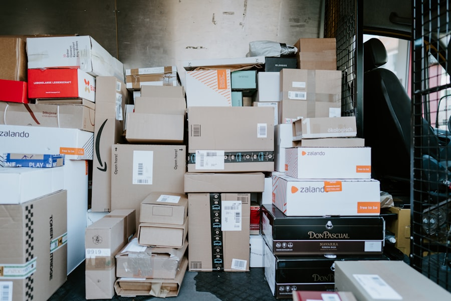

When a leased truck goes down for scheduled maintenance or unexpected repairs, your deliveries can't wait. TCI Transportation's substitute vehicle program puts a replacement truck in your driver's hands so your routes stay covered, your customers stay happy, and your revenue keeps flowing.
TCI's substitute vehicle program is a fleet continuity service built into every full-service lease agreement. When any leased vehicle requires maintenance or repair that takes it out of service, TCI provides a comparable replacement vehicle from our reserve fleet at no additional charge. The substitute is delivered to your location, pre-inspected and ready to operate.
Unlike rental programs that charge daily rates and require separate insurance arrangements, TCI's substitute vehicles are covered under your existing lease terms. There are no per-day fees, no mileage surcharges, and no separate paperwork. The substitute stays in your fleet until your primary vehicle is repaired, inspected, and returned to service — whether that takes one day or two weeks.
Learn About Our Lease ProgramsEvery truck sitting in a repair bay represents lost revenue. For a fleet running dedicated routes, a single vehicle out of service can mean missed delivery windows, customer penalties, and cascading schedule disruptions across your entire operation. The cost of downtime often exceeds the cost of the repair itself.
Without a substitute vehicle program, fleet managers face an impossible choice: scramble to find an expensive rental that may not match their specs, overload remaining vehicles and drivers, or simply tell customers their deliveries will be late. TCI's program eliminates that dilemma entirely. A comparable replacement vehicle is dispatched as soon as the service need is identified, often before the primary vehicle even reaches the shop.
Talk to a Lease Specialist
When a leased vehicle is scheduled for preventive maintenance, TCI coordinates the substitute delivery in advance so there's zero gap in your fleet capacity. For unplanned breakdowns, our dispatch team identifies the nearest available substitute from TCI's reserve fleet network spanning locations across the country and arranges delivery to your facility or the breakdown location.
Each substitute vehicle is maintained to the same standards as your primary lease fleet — current on all inspections, fully fueled, and equipped with the necessary safety and compliance documentation. TCI tracks substitute utilization across your account, providing monthly reports that show downtime events, substitute deployment times, and total days covered. This data helps identify recurring issues and optimize your preventive maintenance schedule to reduce future downtime.
Get Started TodaySubstitute vehicles are included in your TCI full-service lease at no extra charge. No daily rental fees, no mileage surcharges, no separate insurance requirements — just seamless fleet continuity.
TCI matches substitute vehicles to your primary fleet specifications as closely as possible. Same vehicle class, similar body configuration, and equivalent payload capacity so your drivers can operate without disruption.
For planned maintenance events, TCI coordinates substitute delivery before your primary vehicle enters the shop. Your fleet capacity never drops below operational requirements, even during scheduled service windows.
“We run 28 trucks on dedicated routes with zero tolerance for missed deliveries. TCI's substitute vehicle program has kept us at full capacity through every maintenance event and breakdown. In two years, we haven't missed a single delivery window due to equipment downtime.” — Director of Logistics, Retail Supply Chain
TCI's substitute vehicle program ensures equipment downtime never becomes delivery downtime. Contact us to learn how our full-service lease keeps your operation running without interruption.